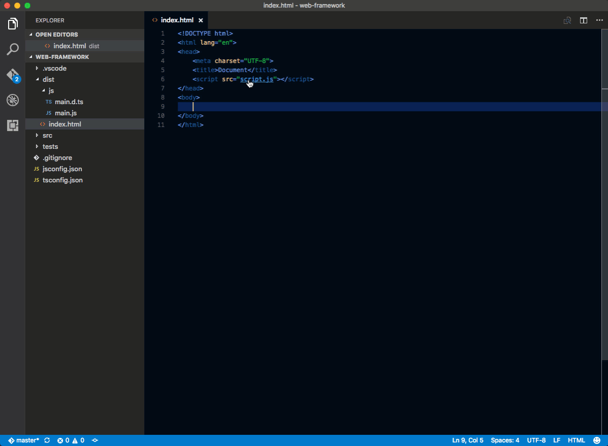
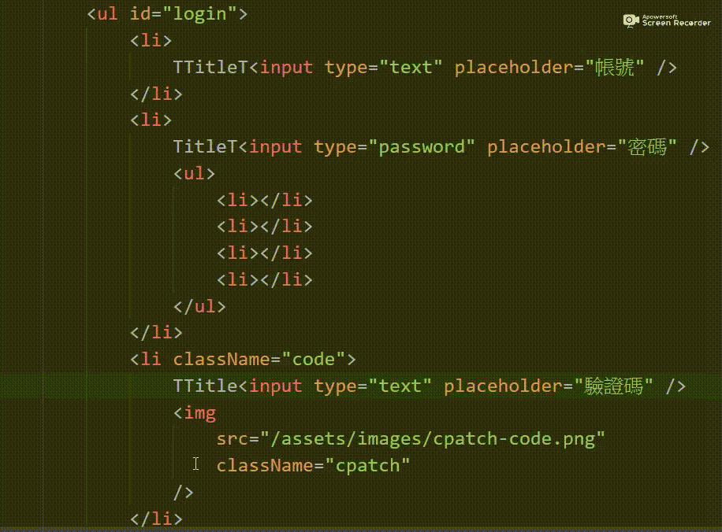

Ａ
Ｂ
Ｃ
vue.js自我筆記
| 快捷鍵 | 用法說明 |
|---|---|
| CTRL+SHIFT+P | 叫出Package Control，可用中文去查你想要的操作或是關鍵字，很方便!例如TAB縮排，你可打”使用TAB縮排”，就會跳出相關操作喔! |
| CTRL+P | 可快速對目前檔案做文字查尋，找你想要的文字內容。 也可以輸入目前檔案的檔名，快速替你開啟檔案。 |
| alt + shift + f | 自動整理程式碼 |
| CTRL + k + c | 區塊註解 |
| CTRL + k + u | 區塊取消註解 |
| ALT + ↑ 或 Alt + ↓ | 移動整行字串 |
| Ctrl + 數字鍵 最多可分割出3個編輯視窗 | 分割編輯視窗 |
| Ctrl + ` | 開啟終端機 |
| Ctrl + F2 | 同時選取同名的字串 |
| Ctrl + 目標對像url | 快速創建或打開檔案
 |
| CTRL+D | 反白選取的文字，可快速幫你把相同字都找出來，做相同的操作，例如一起刪除
|
|
一次編輯多行或多個位置
 |
vue基本說明介紹:
html部份
<div id="app" class="app-1">
<h2 class="form-text-m">這裡接VUE切換的資料，{{ message }}</h2>
<button onclick="newapp()">被原生JS改變!</button>
<button class="btn1">點擊我改變的是陣列資料，但html卻也同步更新!</button>
</div>
js部份
var app = new Vue({
el: '#app',
data:{
message: 'vue可雙向綁定資料且動態新增!'
}
})
function newapp(){
app.message = "被原生JS改變!";
}
//部份簡單功能配合JQ無衝突
$(document).ready(function(){
$(".btn1").click(function(){
app.message = "資料修改成功";
});
});
html部份
<h2 class="form-text-m">{{ message }}</h2>
<button onclick="app1()">點擊我改變資料</button>
<button onclick="app1_1()">點擊我又改回來</button>
js部份
var data_1 = {
message: 'vue可雙向綁定資料且動態新增!'
}
var app_1 = new Vue({
el: '#app-1',
data: data_1
})
function app1() {
app_1.message = "資料修改成功";
}
function app1_1() {
app_1.message = "資料又被修改回來";
}
諸如:v-once、v-html等，後面還會提到別的，像v-text!因為很簡單，這裡就不多說
{{ text }}
{{ rawHtml }}
請在此加入原始 HTML 結構
請將下欄位改為單次綁定，它原本文字內容是對應上面的字串，但這裡不會跟著上面的打字跟著換!!
對文字形的input用v-model綁定，跟選項類的input是不同結果
文字input則是輸出打字的內容，選項input是輸出布林值，多選input是輸出布林或是value值
textinput值:{{textinput}}
checkbox值:{{checkbox}}-{{checkbox1}}
radio值:{{radio}}
html部份
<h4>1.字串</h4>
<p>{{ text }}</p>
<input type="text" class="form-control" v-model="text">
<hr>
<h4 class="mt-3">2.v-html="rawHtml"原始 HTML</h4>
<p>{{ rawHtml }}</p>
<p v-html="rawHtml">請在此加入原始 HTML 結構</p>
<p><a href="https://cn.vuejs.org/v2/api/#v-html">額外注意事項</a></p>
<hr>
<h4 class="mt-3">3.v-once 單次綁定</h4>
<p>請將下欄位改為單次綁定，它原本文字內容是對應上面的字串，但這裡不會跟著上面的打字跟著換!!</p>
<div v-text="text" v-once>等等這裡的字會被上面的v-model="text"綁定一次資料內容!</div> <h4 class="mt-3">4.v-model對input的綁定</h4>
<p>對文字形的input用v-model綁定，跟選項類的input是不同結果</p>
<p>文字input則是輸出打字的內容，選項input是輸出布林值，多選input是輸出布林或是value值</p>
1.<input type="text" v-model="textinput">
<br>
2.
<input type="checkbox" v-model="checkbox" id="testbox"><input type="checkbox" v-model="checkbox1" id="testbox1">
<br>
3.<input type="radio" v-model="radio" value="1"><input type="radio" v-model="radio" value="2">
<p>textinput值:{{textinput}}</p>
<p>checkbox值:{{checkbox}}-{{checkbox1}}</p>
<p>radio值:{{radio}}</p>
js部份
var app_1_2 = new Vue({
el: '#app-1-2',
data: {
text: '這是一段文字',
rawHtml: `<span class="text-danger">紅色文字</span>`,
number1: 100,
number2: 300,
htmlId: 'HTMLID',
isDisabled: true,
textinput:'目前是空值',
checkbox:'',
checkbox1:'',
radio:''
}
})
html部份
<span v-bind:title="message">請把滑鼠滑過，你會看到title被寫入資料</span>
js部份
var app2 = new Vue({
el: '#app-2',
data: {
message: '你目前的系統時間' + new Date()
}
})
html部份
<img class="d-inline-block" v-bind:src="imgSrc" v-bind:class="className" v-bind:data-test="test" alt="">
<img class="d-inline-block" :src="imgSrc" :class="className" :data-test="test" alt="">
<img class="d-inline-block" v-bind:src="imgSrc" v-bind:class="className" v-bind:data-test="test" alt="">
js部份
$("#app2-1").click(function(){
var app2_1 = new Vue({
el: '#app2-1',
data: {
imgSrc: 'https://images.unsplash.com/photo-1479568933336-ea01829af8de?ixlib=rb-0.3.5&ixid=eyJhcHBfaWQiOjEyMDd9&s=d9926ef56492b20aea8508ed32ec6030&auto=format&fit=crop&w=2250&q=80',
className: "img-fluid",
test: 'OK'
}
})
});
html部份
<div class="box tcolor-black" v-bind:class="tryArray">1.將陣列代入class</div>
<div class="box tcolor-black" v-bind:class="[activeClass, errorClass]">1.將陣列直接寫入class</div>
<div class="box tcolor-black" v-bind:class="classArray">1.將陣列classArray寫入class</div>
<div class="box tcolor-black" v-bind:class="classObject">1.將物件classObject寫入class</div>
<div class="box tcolor-black" v-bind:class="{'ok':isclass}">2.單純切換class，{{isclass}}</div>
<div class="box tcolor-black" v-bind:class="isclass ? tryclass : ''">2.單純切換class，函式直接寫入，切換class，{{isclass}}</div> <button class="btn btn-outline-primary" v-on:click="isclass = !isclass">2.單純切換class，{{isclass}}</button>
<div class="box tcolor-black" v-bind:class="[isActive ? activeClass : '', errorClass]">3.將陣列且多組內容直接寫入class，且可切換class，{{isActive}}</div>
<div class="box tcolor-black" v-bind:class="classObject">3.寫入物件，且可切換class</div> <button class="btn btn-outline-primary" v-on:click="isActive = !isActive">3.將陣列且多組內容直接寫入class，且可切換class，{{isActive}}</button>
<button class="btn btn-outline-primary" v-on:click="classObject.active = !classObject.active,classObject.error = !classObject.error">3.寫入物件，且可切換class</button>
<div class="box" v-bind:class="{ rotate: isTransform,'test':test }">4</div>
<div class="box" v-bind:class="{ 'rotate': isTransform }">4</div>
<div class="box" :class="{ 'rotate': isTransform }">4</div> <button class="btn btn-outline-primary" v-on:click="isTransform = !isTransform,test=!test">4.多個class綁定</button>
<button class="btn btn-outline-primary" v-on:click="isTransform = !isTransform">4.旋轉物件</button>
<button class="btn btn-outline-primary" @click="isTransform = !isTransform">4.v-on:改簡寫修飾符的旋轉鈕</button>
js部份
var app2_2 = new Vue({
el: '#app2-2',
data: {
isclass:true,
isActive: false,
isTransform: false,
test: false,
classObject: {
active: true,
error: false
},
activeClass: 'active',
errorClass: 'text-danger',
tryclass:'yes',
classArray:[
//有值時是TRUE，所以資料代值或是布林都是一樣的!!
{try1:true},
{try2:'2'},
{try3:'3'}
],
tryArray:[
'tryArray1','tryArray2','tryArray3'
]
},
});
css部份
.box {
transition: transform .5s;
display: inline-block;
vertical-align: middle;
width: 200px;
height: 120px;
margin: 15px;
background-color: #f5f5f5;
border: 1px solid;
padding: 15px;
}
.box.rotate {
transform: rotate(45deg)
}
這裡的條件判斷用來決定元素是否顯示
html部份
<p v-if="seen">Now you see me，seen</p>
<p v-if="seen1">Now you can't see me，seen1</p>
js部份
//在console中輸入app3.seen = false就會讓p消失
var app3 = new Vue({
el: '#app-3',
data: {
seen: true, seen1:false
}
})
html部份
<ol>
<li v-for="todo in list">
{{ todo.text }}
</li>
</ol> <ol>
<li v-for="todo in list">
{{todo}}
</li>
</ol> <ol>
<li v-for="todo in list">
{{list}}
</li>
</ol> <ol>
<li v-for="todo in list">
{{list.text}}
</li>
</ol> <ol>
<li v-for="todo in list">
{{list[0].text}}
</li>
</ol> <ol>
<li v-for="value in object">
{{value}}
</li>
</ol> <button onclick="app_4()">點擊我改變的是陣列資料，但html卻也同步更新!</button>
js部份
var app4 = new Vue({
el:'#app-4',
data:{
list:[
{text: 'Learn JavaScript'},
{text: 'Learn Vue'},
{text: 'Build something awesome'}
],
object:{
title:'How to do lists in Vue',
author:'Jane Doe',
publishedAt:'2016-04-10'
}
}
})
//在控制台里，输入 app4.todos.push({ text: '新项目' })，你会发现列表最后添加了一个新项目。
function app_4() {
app4.list[0].text = "修改成功";
app4.object[0] = "新增一樣物件，且名字是'0'成功";
app4.object.title = "title修改成功";
}
vue也可以放一般的資料型態
html部份
<ol>
<li v-for="member in list">
{{ member }}
</li>
</ol>
js部份
//js array可以透過push這個method來新增元素
//試著在console中輸入app4_1.list.push("Donuts Chicken")
//頁面上的list會自動新增一個項目
var app4_1 = new Vue({
el: '#app-4-1',
data: {
list: [
"Daniel Chen",
"David Cheng",
"Destiny Chain"
]
}
})
使用 v-for 來呈現資料列表，使用 v-if 擷取部分資訊
key指的是第幾筆該筆資料的排序
{{list}}
底下出現小於30歲的
html部份
<ul>
<li>第一組</li> <li v-for="(item, key) in list" v-if="item.age < 30">
{{ key }} {{ item.name }}
</li>
</ul> <ul> <li>第二組</li>
<li v-for="item in list">
{{ item.name + " 的年紀是 " + item.age + " 歲"}}
</li>
</ul> <ul> <li>第三組帶有key排序值</li>
<li v-for="item in list">
{{ item.name + " 的年紀是 " + item.age + " 歲"}}
</li>
</ul>
js部份
var app4_2 = new Vue({
el: '#app4-2',
data: {
list: [{
name: '小明',
age: 16
},
{
name: '媽媽',
age: 38,
},
{
name: '漂亮阿姨',
age: 24
},
{
name: '漂亮媽媽',
age: 40
},
{
name: '不漂亮阿姨',
age: 28
}]
}
})
常見的事件綁定為點擊事件，即onclick事件，在vue裡面的寫法
配合methods可自定義函式!!
{{ message }}
html部份
<p>{{ message }}</p>
<button v-on:click="reverseMessage">Reverse Message</button>
js部份
var app5 = new Vue({
el: '#app-5',
data: {
message: 'Hello Vue.js!'
},
methods: {
reverseMessage: function(){
this.message = this.message.split('').reverse().join('')
}
//上面也可以直接省略像下面這樣寫
//reverseMessage(){
// this.message = this.message.split('').reverse().join('')
//}
}
})
html部份
<input type="text" class="form-control" v-model="text" v-on:keyup.enter="reverseText">
<button class="btn btn-primary mt-1" v-on:click="reverseText">反轉字串</button>
<button class="btn btn-primary mt-1" @click="reverseText">已將v-on縮寫成@的反轉字串按鈕</button> <a href="#" class="btn btn-primary mt-1" v-on:click.prevent="reverseText">超連結的反轉字串</a>
<a href="#" class="btn btn-primary mt-1" @click.prevent="reverseText">已將v-on縮寫成@的超連結的反轉字串</a> <div class="mt-3">這裡秀打的文字，但未被反轉{{ text }}</div> <div class="mt-3">{{ newText }}</div>
js部份
var app5_1 = new Vue({
el: '#app-5-1',
data: {
text: '',
newText: ''
},
methods: {
reverseText(event){
console.log(event)
this.newText = this.text.split('').reverse().join('');
}
}
});
像按鍵中的ENTER，就是13，按ENTER在CONSOL裡會看到事件觸發。
按空白鍵
按SHIFT+ENTER
中間鍵
中間鍵右鍵
右鍵html部份
<!--1複習基本用法-->
<div>
<div class="box box5-2" :class="{'rotate': isRotate }"></div>
<button class="btn btn-outline-primary" v-on:click="changeRotate">切換 box 樣式</button>
<hr>
</div>
<!--2-帶入參數-->
<div>
<h4>2-帶入參數</h4>
<ul>
<li v-for="item in arrayData" class="my-2">
{{ item.name }} 有 {{ item.cash }} 元
<button class="btn btn-sm btn-outline-primary" @click="storeMoney(item)">儲值</button>
</li>
</ul>
<hr>
</div>
<!--3-事件修飾符-->
<div>
<h4>3-修飾符</h4>
<h5>事件修飾符</h5>
<ul>
<li>.stop - 調用 event.stopPropagation()。</li>
<li>.prevent - 調用 event.preventDefault()。</li>
<li>.capture - 添加事件偵聽器時使用 capture 模式。</li>
<li>.self - 只當事件是從偵聽器綁定的元素本身觸發時才觸發回調。</li>
<li>.once - 只觸發一次回調。</li>
</ul>
<br>
<ol>
<li>
<h6>將此範例加上 stopPropagation (防止向外尋找)</h6>
<div class="p-3 bg-primary" @click="trigger('div')">
<span class="box box5-2" @click.stop="trigger('box')"></span>
</div>
</li>
<li>
<h6 class="mt-3">事件偵聽器時使用 capture 模式 (事件改為由外而內)</h6>
<div class="p-3 bg-primary" @click.capture="trigger('div')">
<span class="box box5-2 d-flex align-items-center justify-content-center" @click.capture="trigger('box')">
<button class="btn btn-outline-secondary" @click.capture="trigger('button')">按我</button>
</span>
</div>
</li>
<li>
<h6 class="mt-3">事件偵聽器時使用 self 模式 (只會觸發自己範圍內的)</h6>
<div class="p-3 bg-primary" @click.self="trigger('div')">
<span class="box box5-2 d-flex align-items-center justify-content-center" @click.self="trigger('box')">
<button class="btn btn-outline-secondary" @click.self="trigger('button')">按我</button>
</span>
</div>
</li>
<li>
<h6 class="mt-3">事件偵聽器只觸發一次</h6>
<div class="p-3 bg-primary" @click.once="trigger('div')">
<span class="box box5-2 d-flex align-items-center justify-content-center" @click.once="trigger('box')">
<button class="btn btn-outline-secondary" @click.once="trigger('button')">按我</button>
</span>
</div>
</li>
</ol>
<hr>
</div>
<!--4-按鍵修飾符-->
<div>
<h5>4-按鍵修飾符</h5>
<ul>
<li>.{keyCode | keyAlias} - 只當事件是從"特定鍵觸"發時才觸發回調。</li>
<li>別名修飾 - .enter, .tab, .delete, .esc, .space, .up, .down, .left, .right</li>
<li>修飾符來實現僅在按下相應按鍵時才觸發鼠標或鍵盤事件的監聽器 - .ctrl, .alt, .shift, .meta</li>
</ul>
<br>
<ol>
<li>
<h6 class="mt-3">keyCode</h6> <p>像按鍵中的ENTER，就是13，按ENTER在CONSOL裡會看到事件觸發。</p>
<input type="text" class="form-control" v-model="text" @keyup.13="trigger(13)">
</li>
<li>
<h6 class="mt-3">別名修飾</h6>
<input type="text" class="form-control" v-model="text" @keyup.space="trigger('space')">
</li>
<li>
<h6 class="mt-3">相應按鍵時才觸發的監聽器</h6>
<input type="text" class="form-control" v-model="text" @keyup.shift.enter="trigger('shift + Enter')">
</li>
</ol>
<hr>
</div>
<!--5-滑鼠修飾符-->
<div>
<h5>5-滑鼠修飾符</h5>
<ul>
<li>.left - (2.2.0) 只當點擊鼠標左鍵時觸發。</li>
<li>.right - (2.2.0) 只當點擊鼠標右鍵時觸發。</li>
<li>.middle - (2.2.0) 只當點擊鼠標中鍵時觸發。</li>
</ul>
<div class="p-3 bg-primary">
<p>中間鍵</p>
<span class="box box5-2" @click.middle="trigger('middle')">中間鍵</span>
<p>右鍵</p>
<span class="box box5-2" @click.right="trigger('right')">右鍵</span>
</div>
</div>
js部份
var app5_2 = new Vue({
el: '#app-5-2',
data: {
arrayData: [{
name: '小明',
age: 16,
cash: 500
},
{
name: '漂亮阿姨',
age: 24,
cash: 1000
},
{
name: '杰倫',
age: 20,
cash: 5000
}],
isRotate: false,
text: ''
},
methods: {
changeRotate: function() {
this.isRotate = !this.isRotate;
},
storeMoney: function(item) {
item.cash = item.cash + 500;
},
trigger: function(name) {
console.log(name, '此事件被觸發了')
}
}
});
css部份
.box5-2{
display: block;
transition: all .5s;
}
.box5-2.rotate{
transform:rotate(45deg);
}
{{ message }}
{{ message }}
html部份
<p>{{ message }}</p>
<p v-text="message">{{ message }}</p>
<p v-html="message"></p>
<input v-model="message">
js部份
var app6 = new Vue({
el: '#app-6',
data: {
message: 'Hello Vue!'
}
})
vue若添加 lazy 修飾符，v-model.lazy="message"，則轉變為使用 change 事件進行同步，即離開輸入欄位時，才輸出資料
{{ message }}
html部份
<p>{{ message }}</p>
<input v-model.lazy="message">
js部份
var app6_1 = new Vue({
el: '#app-6-1',
data: {
message: 'Hello Vue!'
}
})
自動將用戶所輸入的內容轉換為數字型態，可以直接在v-model添加 number 修飾符，如果沒加number，你輸入的數字就還是字串形態
{{ count }}
{{ type }}
html部份
<p>{{ count }}</p>
<p>{{ type }}</p>
<input v-model.number="count">
<input v-model="count">
js部份
var app6_2 = new Vue({
el: '#app-6-2',
data: {
count: 0,
type: '',
},
watch: {
count:function(val){
this.type = typeof val;
},
},
})
為避免用戶誤輸入空白字元，因此，可以透過給v-model添加 trim 修飾符，自動過濾掉用戶所輸入的首尾空白字符
{{ message }}
html部份
<p>{{ message }}</p>
<input v-model.trim="message">
js部份
var app6_3 = new Vue({
el: '#app-6-3',
data: {
message: 'Hello Vue!'
}
})
html部份
<input type="text" class="form-control" v-model="text" v-on:keyup.enter="reverseText">
<button class="btn btn-primary mt-1" v-on:click="reverseText">
反轉字串
</button>
<div class="mt-3">
{{ newText }}
</div>
js部份
var app6_6 = new Vue({
el: '#app6-4',
data: {
text: '',
newText: ''
},
// 請在此撰寫 JavaScript
methods: {
reverseText: function () {
console.log(this.text);
this.newText = this.text.split('').reverse().join('');
}
}
});
1-單行文字框
{{ text }}2-文字區域
{{ textarea }}
3-Checkbox 與 Radio
4-複選框checkbox
晚餐火鍋裡有 {{ item }} 。
5-單選radio
晚餐火鍋裡有 {{ singleRadio }}。
6-Select
{{selected}}
html部份
<p>單行文字框</p>
<p>{{ text }}</p>
<input type="text" class="form-control" v-model="text">
<hr>
<p>文字區域</p>
<p>{{ textarea }}</p>
<textarea cols="30" rows="3" class="form-control" v-model="textarea"></textarea>
<hr>
<p>Checkbox 與 Radio</p>
<div class="form-check">
<input type="checkbox" class="form-check-input" id="check1" v-model="checkbox1">
<label class="form-check-label" for="check1">{{checkbox1}}</label>
</div>
<hr>
<p>複選框checkbox</p>
<div class="form-check">
<input type="checkbox" class="form-check-input" id="check2" value="雞" v-model="checkboxArray">
<label class="form-check-label" for="check2">雞</label>
</div>
<div class="form-check">
<input type="checkbox" class="form-check-input" id="check3" value="豬" v-model="checkboxArray">
<label class="form-check-label" for="check3">豬</label>
</div>
<div class="form-check">
<input type="checkbox" class="form-check-input" id="check4" value="牛" v-model="checkboxArray">
<label class="form-check-label" for="check4">牛</label>
</div>
<p>晚餐火鍋裡有 <span v-for="item in checkboxArray">{{ item }} </span>。</p>
<hr>
<p>單選radio</p>
<div class="form-check">
<input type="radio" class="form-check-input" id="radio2" value="雞" v-model="singleRadio">
<label class="form-check-label" for="radio2">雞</label>
</div>
<div class="form-check">
<input type="radio" class="form-check-input" id="radio3" value="豬" v-model="singleRadio">
<label class="form-check-label" for="radio3">豬</label>
</div>
<div class="form-check">
<input type="radio" class="form-check-input" id="radio4" value="牛" v-model="singleRadio">
<label class="form-check-label" for="radio4">牛</label>
</div>
<p>晚餐火鍋裡有 {{ singleRadio }}。</p>
<hr>
<p>Select</p>
<select name="" id="" class="form-control" v-model="selected">
<option disabled value="">請選擇</option>
<option value="小美">小美</option>
<option value="可愛小妞">可愛小妞</option>
<option value="漂亮阿姨">漂亮阿姨</option>
</select>
<p>{{selected}}</p>
js部份
var app6_5 = new Vue({
el: '#app-6-5',
data: {
text: '',
textarea: '',
checkbox1: false,
checkboxArray: [],
singleRadio: '',
selected: '',
},
});
v-model 表單進階活用
小明喜歡的女生是 {{ selected }}。
小明喜歡的女生是 {{ selected2 }}。
小明喜歡的女生是 {{ item }} 。
{{ age }}
html部份
<div>
<h4>Select</h4>
<select name="" id="" class="form-control" v-model="selected">
<option disabled value="">請選擇</option>
<option value="小美">小美</option>
<option value="可愛小妞">可愛小妞</option>
<option value="漂亮阿姨">漂亮阿姨</option>
</select>
<p>小明喜歡的女生是 {{ selected }}。</p>
<hr>
<select name="" id="" class="form-control" v-model="selected2">
<option disabled value="">請選擇</option>
<option :value="item" v-for="item in selectData">{{ item }}</option>
</select>
<p>小明喜歡的女生是 {{ selected2 }}。</p>
<hr>
</div>
<!---->
<div>
<h4 class="mt-3">多選</h4>
<select name="" id="" class="form-control" multiple v-model="multiSelected">
<option value="小美">小美</option>
<option value="可愛小妞">可愛小妞</option>
<option value="漂亮阿姨">漂亮阿姨</option>
</select>
<p>小明喜歡的女生是 <span v-for="item in multiSelected">{{ item }} </span>。</p>
<hr>
</div>
<!---->
<div>
<h4 class="mt-3">複選框</h4>
<div class="form-check">
<input type="checkbox" class="form-check-input" id="sex" v-model="sex" true-value="男生" false-value="女生">
<label class="form-check-label" for="sex">{{ sex }}</label>
</div>
</div>
<!---->
<div>
<h4 class="mt-3">修飾符</h4>
{{ lazyMsg }}
<input type="text" class="form-control" v-model.lazy="lazyMsg">
<br>
<input type="number" class="form-control" v-model.number="age">
<br>
{{ trimMsg }}緊黏的文字
<input type="text" class="form-control" v-model.trim="trimMsg">
</div>
js部份
var app6_6 = new Vue({
el: '#app-6-6',
data: {
singleRadio: '',
selected: '',
selectData: ['小美', '可愛小妞', '漂亮阿姨'],
selected2: '',
multiSelected: [],
sex: '男生',
// 修飾符
lazyMsg: '',
age: '',
trimMsg: ''
},
});
vue有提供一些過場效果的語法
hello
html部份
<button v-on:click="show = !show">
Toggle
</button>
<transition name="fade">
<p v-if="show">hello</p>
</transition>
js部份
var app_7 = new Vue({
el: '#app-7',
data: {
show: true
}
})
css部份
.fade-enter-active,.fade-leave-active {
transition: opacity .5s
}
.fade-enter,
.fade-leave-active {
opacity: 0
}
1.computed跟watch很像，同樣都是針對某變數有變化時才執行函式(相依某data值)，但computed有下面不一樣的特質!!
2.有點類似6-4
3.computed一定會回傳一個值!!(或是執行事件)
4.Computed 的一個特性「 暫存 」，每次調用時他會把結果暫存起來，假如今天我寫了一個複雜的 Computed 需要費時一秒，在沒有暫存的狀態下，我是不是調用 100 次就會花個… 100 秒
5.computed與Method相比就蠢蠢der，每次重新渲染或資料變動都會重算一次；當你的相依data包含大且深層陣列，computed會重新執行且效能差。
一般來說不會修改資料，只會回傳用於畫面呈現的資料，只要資料變動就會觸發，無形之中執行次數也會增加勒因此在大量資料時，會建議透過 methods 減少不必要的運算喔
由此可知，Computed綁定資料監控資料，methods是綁定事件行為才觸發!!
再詳細解說:computed與methods的差異
由此可知白話解釋就是，Computed綁定資料監控資料，methods是綁定事件行為才觸發!!
html部份
<input type="text" class="form-control" v-model="text">
<div class="mt-3">
{{ reverseText }}
</div>
{{ reverseText }}
js部份
var app_8 = new Vue({
el: '#app-8',
data: {
text: '',
newText: ''
},
computed: {
reverseText() {
return this.text.split('').reverse().join('');
}
}
})
有點類似6-4
computed可回傳值
computed與methods的差異
- computed 是在監控資料更動後，重新運算結果呈現於畫面上，一般來說不會修改資料，只會回傳用於畫面呈現的資料
- methods 就是互動的函式，需要觸發透過v-on綁定事件才會運作，例如點擊或滑動等js事件，會用來修改資料內容
html部份
<input type="text" class="form-control" v-model="text">
<div class="mt-3">
{{ reverseText }}
</div>
{{ reverseText }}
js部份
var app_8_1 = new Vue({
el: '#app-8-1',
data: {
text: '',
newText: ''
},
computed: {
reverseText() {
return this.text.split('').reverse().join('');
}
}
})
html部份
你已經點擊
<button class="btn btn-outline-secondary btn-sm" @click="counter += 1">{{ counter }}</button>下。
<button class="btn btn-outline-secondary btn-sm" @click="counter += 1">{{ counter }}</button>
<br>
<counter-component></counter-component>
js部份
// Vue.component('自定義的元件名稱',{});
Vue.component('counter-component', {
data: function(){
return {
counter: 0
}
},
template: '<div>你已經點擊 <button class="btn btn-outline-secondary btn-sm" @click="counter += 1">{{ counter }}</button> 下。</div>'
})
var app_9 = new Vue({
el: '#app-9',
data: {
counter: 0
},
});
html部份
<counter-component></counter-component>
<counter-component></counter-component>
<counter-component></counter-component>
js模版部份
<script type="text/x-template" id="counter-component">
<div> 你已經點擊 <button class = "btn btn-outline-secondary btn-sm"@click = "counter += 1" > {{counter}} </button> 下。</div >
</script>
js部份
Vue.component('counter-component', {
data: function(){
return{
counter: 0
}
},
template: '#counter-component'
})
var app_9_2 = new Vue({
el: '#app-9-2',
});
html部份
<h2>靜態傳遞</h2>
<photo img-url="https://images.unsplash.com/photo-1520681080137-2ba442993dd4?ixlib=rb-0.3.5&ixid=eyJhcHBfaWQiOjEyMDd9&s=f9d2aebc72c11a9d5bcbcd66e6ca8cb2&auto=format&fit=crop&w=1350&q=80"></photo> <h2>動態傳遞</h2>
<photo :img-url="url"></photo>
js模版部份
<script type="text/x-template" id="photo">
<div> <img :src="imgUrl" class="img-fluid" alt=""/><p>風景照</p></div >
</script>
js部份
Vue.component('photo', {
// 同學請依據課程內容，自行填寫 Props 的寫法
props:['imgUrl'],
template: '#photo'
})
var app = new Vue({
el: '#app',
data: {
url: 'https://images.unsplash.com/photo-1522204538344-922f76ecc041?ixlib=rb-0.3.5&ixid=eyJhcHBfaWQiOjEyMDd9&s=50e38600a12d623a878983fc5524423f&auto=format&fit=crop&w=1351&q=80'
}
});
請將兩個tr一起使用v-for!!
vue的快速模版語法template，是不會被輸出的!
配合v-for可以快速重覆產生template內的內容，當然筆數是看取得的資料有幾筆!
| {{ key }} . {{ item.name }} | --{{ item.age }}歲 |
html部份
<table class="table">
<template v-for="(item, key) in arrayData">
<tr>
<td>{{ key }} . {{ item.name }}</td>
<td>--{{ item.age }}歲</td>
</tr>
</template>
</table>
js部份
var app_10 = new Vue({
el: '#app-10',
data: {
arrayData: [
{
name: '1小明',
age: 16
},
{
name: '11漂亮阿姨',
age: 24
},
{
name: '111杰倫',
age: 20
}
]
}
});
當需要使用vue指令，但標籤又不希望被輸出時，就用template
| 編號 | 姓名 |
|---|---|
| 1 | 安妮 |
| 2 | 小明 |
html部份
<table class="table">
<thead>
<th>編號</th>
<th>姓名</th>
</thead>
<template v-if="showTemplate">
<tr>
<td>1</td>
<td>安妮</td>
</tr>
<tr>
<td>2</td>
<td>小明</td>
</tr>
</template>
</table>
<div class="form-check">
<input type="checkbox" class="form-check-input" id="showTemplate" v-model="showTemplate">
<label class="form-check-label" for="showTemplate">啟用元素狀態</label>
</div>
js部份
var app_10_1 = new Vue({
el: '#app-10-1',
data: {
showTemplate: true
}
});
| {{ item.name }} | {{ item.cash }} | {{ item.icash }} |
html部份
<table class="table">
<thead>
</thead>
<tbody>
<tr v-for="(item, key) in data" :person="item" :key="key" is="row-component">
<!--<row-component v-for="(item, key) in data" :person="item" :key="key" is="row-component"></row-component>-->
<!--<tr v-for="(item, key) in data" :person="item" :key="key">-->
<td>{{ item.name }}</td>
<td>{{ item.cash }}</td>
<td>{{ item.icash }}</td>
</tr>
</tbody>
</table>
模板js部份
<script type="text/x-template" id="rowComponentTemplate">
<tr>
<td>{{ person.name }}</td>
<td>{{ person.cash }}</td>
<td>{{ person.icash }}</td>
</tr>
</script>
js部份
// Vue.component('row-component',{
// props:['person'],
// template:'#rowComponentTemplate'
// });
var child = {
props: ['person'],
template: '#rowComponentTemplate'
}
var app10_2 = new Vue({
el: '#app-10-2',
data: {
data: [
{name: '小明',cash: 100,icash: 500,},
{name: '杰倫',cash: 10000,icash: 5000,},
{name: '漂亮阿姨',cash: 500,icash: 500,},
{name: '老媽',cash: 10000,icash: 100,},
]
},
components: {
"row-component": child
}
});
標準版
標準版1
簡易版
當使用了v-if時，相鄰元素使用v-else，v-if的以外結果會傳到v-else
html部份
<p>標準版</p>
<div class="alert alert-success" v-if="isSuccess == true">成功!</div>
<div class="alert alert-danger" v-if="isSuccess == false">失敗!</div>
<p>標準版1</p>
<div class="alert alert-success" v-if="isSuccess">成功!</div>
<div class="alert alert-danger" v-if="!isSuccess">失敗!</div>
<p>簡易版</p>
<p>當使用了v-if時，相鄰元素使用v-else，v-if的以外結果會傳到v-else</p>
<div class="alert alert-success" v-if="isSuccess">成功!</div>
<div class="alert alert-danger" v-else>失敗!</div>
<div class="form-check">
<input type="checkbox" class="form-check-input" id="isSuccess" v-model="isSuccess">
<label class="form-check-label" for="isSuccess">啟用元素狀態</label>
</div>
js部份
var app_11 = new Vue({
el: '#app-11',
data: {
isSuccess: true
}
});
html部份
<ul class="nav nav-tabs">
<li class="nav-item">
<a class="nav-link" href="#" :class="{'active': link === 'a'}" @click.prevent="link = 'a'">標題一</a>
</li>
<li class="nav-item">
<a class="nav-link" href="#" :class="{'active': link === 'b'}" @click.prevent="link = 'b'">標題二</a>
</li>
<li class="nav-item">
<a class="nav-link" href="#" :class="{'active': link === 'c'}" @click.prevent="link = 'c'">標題三</a>
</li>
</ul>
<div class="content">
<div v-if="link === 'a'">Ａ</div>
<div v-else-if="link === 'b'">Ｂ</div>
<div v-else-if="link === 'c'">Ｃ</div>
</div>
js部份
var app_11_1 = new Vue({
el: '#app-11-1',
data: {
link: 'a'
}
});
當有兩個文字輸入框切換時，原本輸入的內容沒有被清除，使用key，可在切換後清除內容
點擊切換狀態按鈕並移除或加入key值後，去觀察輸入的文字變化
點擊按鈕後，回傳loginType的值，true時是username，false是email
html部份
<template v-if="loginType === 'username'">
<label>Username</label>
<input class="form-control" placeholder="Enter your username" :key="1">
</template>
<template v-else>
<label>Email</label>
<input class="form-control" placeholder="Enter your email address" :key="2">
</template>
<p>點擊按鈕後，回傳loginType的值，true時是username，false是email</p>
<button class="btn btn-outline-primary mt-3" @click="toggleLoginType">切換狀態</button>
js部份
var app_11_2 = new Vue({
el: '#app-11-2',
data: {
loginType: 'username'
},
methods: {
toggleLoginType: function() {
//點擊按鈕後，回傳loginType的值，true時是username，false是email
return this.loginType = this.loginType === 'username' ? 'email': 'username'
}
}
});
v-if的消失是直接移除DOM元素，v-show是display:none;
html部份
<div class="alert alert-success" v-show="isSuccess">成功!</div>
<div class="alert alert-danger" v-show="!isSuccess">失敗!</div> <div class="form-check">
<input type="checkbox" class="form-check-input" id="isSuccess2" v-model="isSuccess">
<label class="form-check-label" for="isSuccess2">啟用元素狀態</label>
</div>
js部份
var app_11_3 = new Vue({
el: '#app-11-3',
data: {
isSuccess: true
}
});
使用 trigger 來觸發三秒後旋轉 box、並在三秒後改變回來
html部份
<div class="box box-12" :class="{'rotate': trigger }"></div>
<button class="btn btn-outline-primary" @click="trigger = true">Counter</button>
js部份
var app_12 = new Vue({
el: '#app-12',
data: {
trigger: false
},
watch: {
trigger:function(){
var vm = this;
setTimeout(function() {
vm.trigger = false
}, 3000);
}
}
});
css部份
.box-12{
transition: all .5s;
}
.box-12.rotate{
transform: rotate(45deg);
}
僅需要排序價格、到期日。
提示：
| 品名 | 價格 | 到期日 |
|---|---|---|
| {{ item.name }} | {{ item.price }} | {{ item.expiryDate }} |
html部份
<div id="app-13">
<table class="table">
<thead>
<tr>
<th>品名</th>
<th class="click">價格
<span class="icon">
<i class="fas fa-angle-up text-success"></i>
</span>
</th>
<th class="click">到期日</th>
</tr>
</thead>
<tbody>
<tr v-for="(item, key) in data">
<td>{{ item.name }}</td>
<td>{{ item.price }}</td>
<td>{{ item.expiryDate }}</td>
</tr>
</tbody>
</table>
</div>
js部份
var app_13 = new Vue({
el: '#app-13',
data: {
data: [{
name: '巧呼呼蘇打水',
price: 30,
expiryDate: 90
},
{
name: '心驚膽跳羊肉飯',
price: 65,
expiryDate: 2
},
{
name: '郭師傅武功麵包',
price: 32,
expiryDate: 1
},
{
name: '不太會過期的新鮮牛奶',
price: 75,
expiryDate: 600
},
{
name: '金殺 巧粒粒',
price: 120,
expiryDate: 200
}],
},
// 請在此撰寫 JavaScript
computed: {}
});
css部份
.table th.click {
cursor: pointer;
}
.table th.click {
cursor: pointer;
}
.icon {
display: inline-block;
}
.icon.inverse {
transform: rotate(180deg);
}
| 品名 | 價格 | 到期日 |
|---|---|---|
| {{ item.name }} | {{ item.price }} | {{ item.expiryDate }} |
html部份
<div id="app-13-1">
<table class="table">
<thead>
<tr>
<th>品名</th>
<th class="click" @click="isReverse = !isReverse; sorting = 'price'">價格
<span class="icon" :class="{'inverse' : isReverse, 'show' : sorting === 'price'}">
<i class="fas fa-angle-up text-success"></i>
</span>
</th>
<th class="click" @click="testReverse = !testReverse; sorting = 'expiryDate'">到期日
<span class="icon" :class="{'inverse' : testReverse, 'show' : sorting === 'expiryDate'}">
<i class="fas fa-angle-up text-success"></i>
</span>
</th>
</tr>
</thead>
<tbody>
<tr v-for="(item, key) in getSort">
<td>{{ item.name }}</td>
<td>{{ item.price }}</td>
<td>{{ item.expiryDate }}</td>
</tr>
</tbody>
</table>
</div>
js部份
var app13_1 = new Vue({
el: '#app-13-1',
data: {
testReverse:false,
isReverse: false,
sorting: '',
data: [
{
name: '巧呼呼蘇打水',
price: 30,
expiryDate: 90
},
{
name: '心驚膽跳羊肉飯',
price: 65,
expiryDate: 2
},
{
name: '郭師傅武功麵包',
price: 32,
expiryDate: 1
},
{
name: '不太會過期的新鮮牛奶',
price: 75,
expiryDate: 600
},
{
name: '金殺 巧粒粒',
price: 120,
expiryDate: 200
}
]
},
computed: {
getSort:function(data){
//console.log(this);
var vm = this;
return vm.data.sort(function(a, b){
if (vm.isReverse || vm.testReverse) {
return a[vm.sorting] - b[vm.sorting];
} else {
return b[vm.sorting] - a[vm.sorting];
}
});
}
}
});